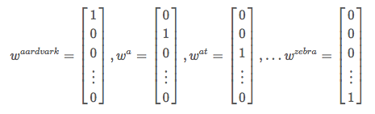
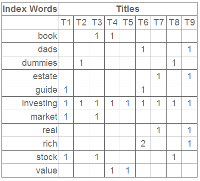
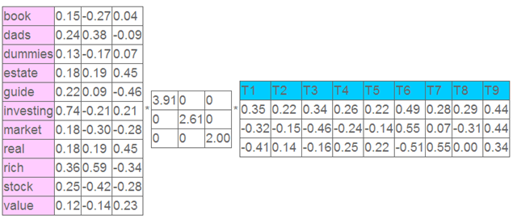
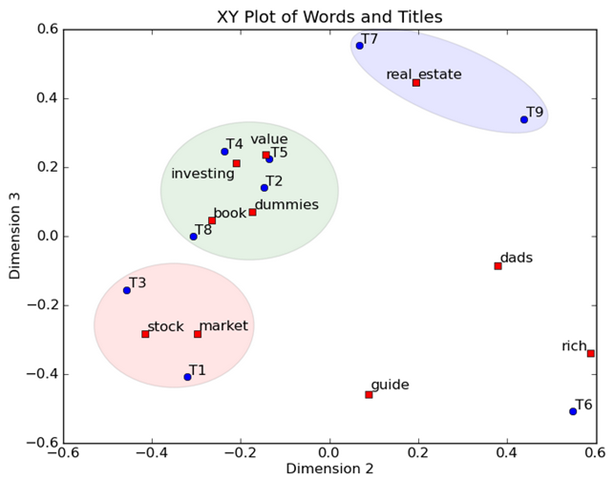
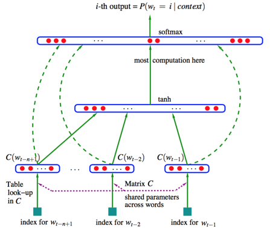
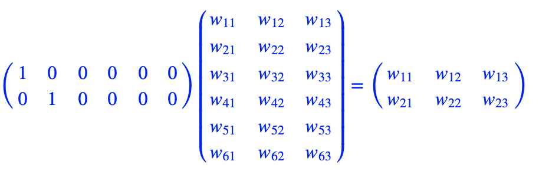
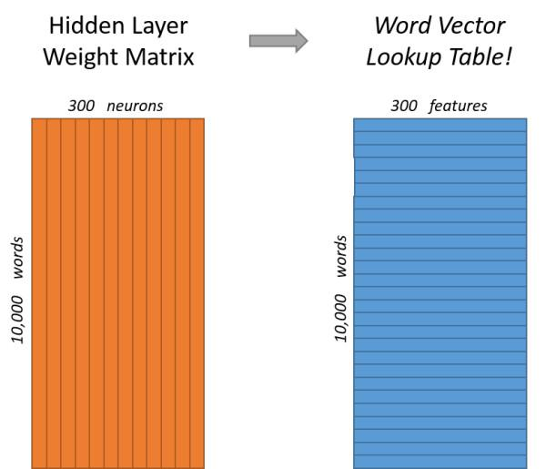
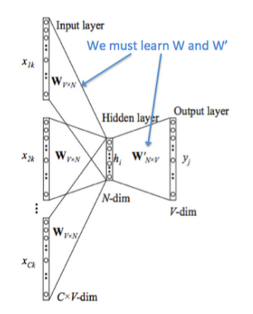
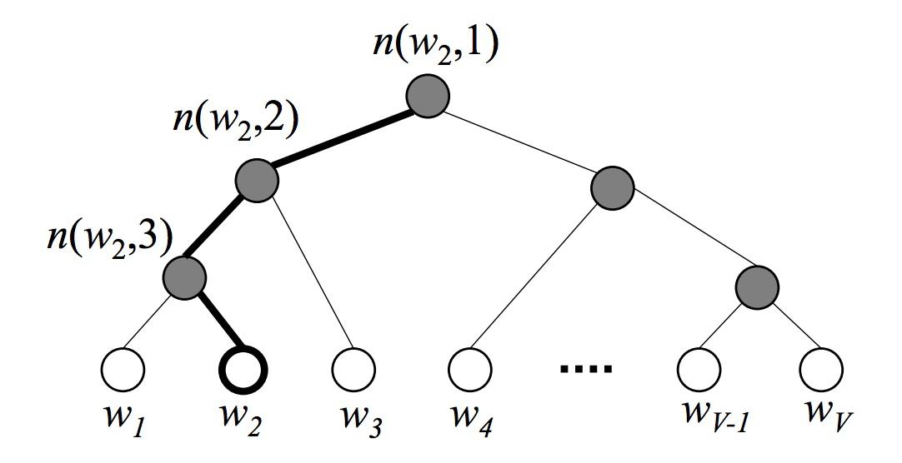
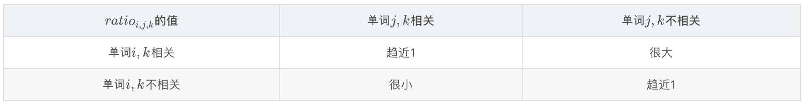

词向量(one-hot/SVD/NNLM/Word2Vec/GloVe)¶
目录
- 词向量简介
- 基于one-hot编码的词向量方法
- 统计语言模型
- 从分布式表征到SVD分解
- 分布式表征（Distribution）
- 奇异值分解（SVD）
- 基于SVD的词向量方法
- 神经网络语言模型（Neural Network Language Model）
- Word2Vec
- 两个模型
- CBoW（Continues Bag-of-Words Model）
- Skip-gram
- 两个提速手段
- 层次Softmax(Hierarchical Softmax)
- Huffman树
- 目标词概率
- 负采样(Nagative Sampling)
- 一些预处理细节
- word2vec的局限性
- GloVe
- 统计共现矩阵
- Glove的由来
- GloVe的代价函数
- 小结
词向量简介¶
无论是是机器学习还是深度学习在处理不同任务时都需要对对象进行向量化表示，词向量（Word Vector）或称为词嵌入（Word Embedding）做的事情就是将词表中的单词映射为实数向量。
基于one-hot编码的词向量方法¶
最简单方法就是将词向量用one-hot向量来表征。
在训练词向量之前，我们都有一个包含我们需要的所有词的词表。首先，我们对每个词进行编号，假设词表的长度为n，则对于每一个词的表征向量均为一个n维向量，且只在其对应位置上的值为1，其他位置都是0。

one-hot向量将每个单词表示为完全独立的实体，这样的表征方法主要有两个问题：
- 有序性问题：它无法反映文本的有序性。因为语言并不是一个完全无序的随机序列。比如说，一个字之后只有接特定的字还能组成一个有意义的词，特定的一系列词按特定的顺序组合在一起才能组成一个有意义的句子。
- 语义鸿沟：其无法通过词向量来衡量相关词之间的距离关系，即这样的表征方法无法反映词之间的相似程度，因为任意两个向量的距离是相同的。 \((w^{hotel})^Tw^{motel} = (w^{hotel})^Tw^{cat} = 0 \)
- 维度灾难：高维情形下将导致数据样本稀疏，距离计算困难，这对下游模型的负担是很重的。
就这样，我们有了语言模型，语言模型的出现是我得以判断一个句子的合理性的置信度，最经典的就是N-gram模型和神经网络语言模型（Neural Network Language Model）。
统计语言模型¶
我们从统计语言模型开始，来解决无序性的这个问题。
在自然语言处理中有一个基本问题： 如何计算一段文本序列在某种语言下出现的概率？ 为什么将其称为一个基本问题呢？在问答系统中，对于一个问题句，如果我们能计算出每个候选句作为答案的概率，则我们只需要选取概率最大的文本作为答案。
统计语言模型给出了这一类问题的一个基本解决框架。对于一段文本序列 \(S=w_1, w_2, ... , w_T \)
他们的概率可以表示为：
\(P(S)=P(w_1, w_2, ..., w_T)=\prod_{t=1}^Tp(w_t|w_1, w_2, ..., w_{t-1}) \)
即将序列的联合概率转化为一系列条件概率的乘积。这样，要求出一段文本的联合概率，仅需要计算出每个词或者每段文本在给定previous words下的条件概率：
\(p(w_t|w_1,w_2,...,w_{t-1}) \)
由于其巨大的参数空间（或说过长的上文文本），这样一个原始的模型在实际中并没有什么用，比如文中的词与文档开头的词并没有什么相关性。我们更多的是仅用之前的n个文本来计算当前文本的条件概率，即我们常说的 N-gram模型：
\(p(w_t|w_1, w_2, ..., w_{t-1}) \approx p(w_t|w_{t-n+1}, ..., w_{t-1}) \)
当我们假设一个词的出现不依赖于其他任何词时，称为unigram；当一个词的出现依赖于上一个词时，我们称为bigram...
我们可以用最大似然法去求解Ngram模型的参数，即等价于去统计每个Ngram的条件词频。事实上，由于模型复杂度和预测精度的限制，我们很少会考虑N>3的模型。
从分布式表征到SVD分解¶
分布式表征（Distribution）¶
但是，Ngram模型仍有其局限性。
- 由于参数空间的爆炸式增长，它无法处理更长程的context（N>3）；
- 其次，它虽然可以描述上下文之间的概率关系，但这种处理方式本质的数学的形式仍是一个个离散的one-hot向量，或者说Ngram仅仅解决了文本之间的转移概率的问题，并没有解决文本本身的表征问题。例如，假设我们在训练语料中看到了很多类似“the dog is walking in the bedroom”或是“the cat is running in the bedroom”这样的句子，那么，即使我们看不懂英文，也可以明白“cat”和“dog”（“walking”和“running”）之间是相似的。然而，Ngram模型能描述的只有running出现在“cat”和“dog”之后的概率都很高，但是无法表述“cat”与“dog”是这两个词是相似的。
- 我们知道one-hot向量的长度对应于整个词表的长度。在动辄上完甚至上百万的实际应用中，这样的表征方法将面临巨大的维度灾难问题。
我们怎样取解决这样一个维度灾难的问题呢。我们可以这样来思考，one-hot编码方式之所以简单，是因为这样的方式完美地表述了每个对象之间的个性，或者说假设每个对象之间是完全独立的。要描述对象之间的共性，我们只需要将表征对象的维度进行压缩，在较小的空间中用连续的稠密向量来描述每个对象的抽象特征，这个稠密向量的为一个维度对应一个特定的抽象属性。比如说我们要描述100个人的身体素质特征，最简单的方法是对其进行one-hot编码，我们将对每个人得到一个长度为100的向量，但是如果我们用第一维来表示身高，第二维来表示体重，第三维...这样我们可以用长度远远小于100的向量来表征一个人。相似的，我们可以用相同的方法来刻画一段文本的特征，同时，我们还可以建立一个从向量到概率的平滑函数模型，使得相似的词向量可以映射到相近的概率空间上，从而将Ngram模型得到的概率信息也整合到向量之中。这样一个稠密连续向量也就是所谓的词向量的分布式表征。
事实上，这个概念在信息检索（Information Retrieval）领域早就已经被广泛地使用了，当时，这个方法被称为向量空间模型（Vector Space Model，以下简称VSM）。VSM主要基于两个假说：词袋假说（Bag of Words Hypothesis）和分布假说（Distributional Hypothesis）。前者是说，一篇文档的词频（而不是词序）代表了文档的主题；后者是说，上下文环境相似的两个词有着相近的语义。
基于Bag of Words Hypothesis，我们可以构造一个term-document矩阵\(A\)，矩阵的行\(A_{i,:}\)对应词典里的一个word；矩阵的列\(A_{:,j}\)对应训练语料里的一篇文档；矩阵里的元素\(A_{i,j}\)代表着word \(w_i\) 在文档 \(D_j\) 中出现的次数（或频率）。那么，我们就可以提取行向量做为word的语义向量，或者提取列向量作为文档的主题向量。
类似地，我们可以基于Distributional Hypothesis构造一个word-context的矩阵。此时，矩阵的列变成了context里的word，矩阵的元素也变成了一个context窗口里word的共现次数。
后面我们会看到，用SVD算法表征的词向量就是Bag of Words Hypothesis，而word2vec算法是基于Distributional Hypothesis的。
奇异值分解（SVD）¶
之前我们已经清楚地讲述了SVD构造词向量的理论背景。首先，考虑到对奇异值分解不理解的同学，看完这里可以保证你完全理解奇异值分解。对奇异值分解有一定基础的同学可以直接跳过这一小结。
简单来说，奇异值分解是一个有着很明显的物理意义的方法，它可以将一个比较复杂的矩阵用更小更简单的几个子矩阵的相乘来表示，这些小矩阵描述的是矩阵的重要的特性。就像描述一个人一样，我们只需要简单的描述人脸上的几个重要特征，比如说浓眉大眼，方脸，络腮胡，而且带个黑框的眼镜，你就可以在脑海中有一个较为清楚的认识。实际上，人脸上的特征是有着无数种的，之所以能这么描述，是因为这几个特征的较其他特征更能反映人脸的特点，SVD便是这样一个算法，让机器学会抽取对象的重要特征。
首先，我们来回顾一下本科线性代数中学到的特征值分解，如果说一个向量\(v\)是矩阵A的特征向量，则我们可以将其表现为如下形式： \(Av = \lambda v \) 这时\(\lambda\)被称为特征向量\(v\)对应的特征值。我们知道一个矩阵对应不同特征值的特征向量是相互正交的。而特征值分解则是将矩阵分解为 \(A = Q \Sigma Q^{-1} \) 其中，\(Q\)为这个矩阵A的特征向量组成的矩阵，\(\Sigma\)是一个对角阵，对角阵的每个元素为特征向量对应的特征值。由于特征向量是相互正交的，则我们可以将特征向量看作是几何空间的不同方向，特征值分解则是将一个矩阵分解为在不同正交方向上的向量表征，特征值则是分解后对应方向上的分量大小。如果我们需要提取这个方阵最主要的特征，则只需要找到最大的特征值及其对应的特征向量即可。
然而，特征值分解具有其自己的局限性，即变换矩阵必须为方阵。然而，实际生活中，大部分问题都不能表征为方阵的形式。比如有n个样本，每个样本有m个特征，此时的矩阵A可能就不是方阵。
奇异值分解则是一种可以适用于任意矩阵的一种分解方法: \(A = U \Sigma V^T \)
假设A是一个\(n \times m\)的矩阵，则\(U\)为\(n \times n\)大小的矩阵，各个向量是相互正交的，被称为左奇异向量；\(\Sigma\)为\(n \times m\) 大小的矩阵，仅在对角线上有值，而\(V^T\)中各个向量也是相互正交的，被称为右奇异向量，为什么呢， 可以用下面公式简单解释一下特征值分解与奇异值分解之间的关系：
\(A = U \Sigma V^T => A^T = V \Sigma U^T => A^TA = V \Sigma U^TU \Sigma V^T = V \Sigma^2 V^T \)
上式使用了：\(U^TU = I\)，类似的方法我们可以用\(A^TA\)来使得\(V^TV = I\)从而确定\(V\)矩阵，而\(\Sigma\Sigma^T\)得到一个\(n \times n\)大小的矩阵，等效于\(A^TA\)矩阵的特征向量。即\(\Sigma\)的每个特征值的平方等于\(A^TA\)的特征值。从而我们实现了对任意矩阵的奇异值分解。
与特征值分解类似，我们可以用奇异值的大小来衡量对应特征向量的重要性， 通常前10%甚至更少的特征值可以占据所有特征值之和的99%以上。 因此，我们可以用前k个奇异值及其对应向量来描述整个矩阵，左奇异矩阵可以对列进行压缩，右奇异矩阵可以对行进行压缩，从而选取一部分的奇异值和奇异向量来对原矩阵进行近似的表征（即我们的PCA降维）。
\(A_{m\times n} \approx U_{m\times r}\Sigma V^T_{r\times n}\)
奇异值分解的缺点是在于分解出来的向量通常是不能很好的解释的，这与Word2Vec类似，但这并不影响其使用
基于SVD的词向量方法¶
奇异值分解的词向量方法的应用最开始并不是用于词向量的表征，而是应用在潜在语义索引（Latent Semantic Indexing）算法中的，感兴趣的同学可以自己搜一下相关算法的原理，这里只介绍该算法中用SVD生成词向量的方法。
由Bag of Words Hypothesis，假设我们有m个词，n个文本，我们就可以生成一个对应的term-document矩阵\(A_{m \times n}\)，如下所示：

鉴于这种co-occurrence矩阵在大量数据样本的时候仍然存在着数据稀疏性和维度灾难的问题，我们将用SVD的方法对其进行降维。对于上述矩阵，我们对其进行SVD分解并选取前3个特征值及其对应的特征向量，得到如下三个矩阵：

每个特征值的大小表示对应位置的属性值的重要性大小，左奇异矩阵的每一行即代表每个词的特征向量，右奇异矩阵的每一列表示每个文档的特征向量。我们取每个向量后两维的对应值投影到一个二维空间，如下所示

其中，一个红色的点对应一个词，一个蓝色的点对应一个文档。这样我们可以对这些词和文档进行聚类，比如说stock和market可以放在一类，real和estate可以放在一类，按这样的聚类结果，我们可以实现对文档中的近义词进行提取，同时，当用户用词取检索文档的时候，是可以基于语义（在向量空间中相近的词）进行检索，而不是仅仅用单个的词进行检索。
神经网络语言模型（Neural Network Language Model）¶
鉴于Ngram等模型的不足，2003年，Bengio等人发表了一篇开创性的文章：A neural probabilistic language model。在这篇文章里，他们总结出了一套用神经网络建立统计语言模型的框架（Neural Network Language Model，以下简称NNLM），并首次提出了word embedding的概念（虽然没有叫这个名字），从而奠定了包括word2vec在内后续研究的基础，使得NLP进入一个万物Embedding的时代。
NNLM模型的基本思想可以概括如下：
- 假定词表中的每一个word都对应着一个连续的特征向量；
- 假定一个连续平滑的概率模型，输入一段词向量的序列，可以输出这段序列的联合概率；
- 同时学习词向量的权重和Ngram概率模型里的参数。
值得注意的一点是，这里的词向量也是要学习的参数，也就是说词向量是在训练的过程中自动生成的。
在03年的论文里，Bengio等人采用了一个简单的前向反馈神经网络\(f(w_{t-n+1},...,w_{t})\)来拟合一个词序列的条件概率\(p(w_t|w_1,w_2,...,w_{t-1})\)。整个模型的网络结构为一个三层神经网络。第一层为映射层，第二层为隐藏层，第三层为输出层见下图：

用端到端的思想来看，我们输入一个词的one-hot向量表征，希望得到相应的相应词的条件概率，则神经网络模型要做的就是拟合一个由one-hot向量映射为相应概率模型的函数。我们将上图的网络结构拆成两部分来理解：
- 首先是一个线性的映射层。它将输入的N−1个one-hot词向量，通过一个共享的D×V的矩阵C，映射为N−1个分布式的词向量（distributed vector）。其中，V是词典的大小，D是Embedding向量的维度（一个先验参数）。C矩阵里存储了要学习的word vector，为什么这是我们需要的词向量呢？试想一下，当我们把n个one-hot表征的词向量词典输入到神经网络中，单层的神经网络进行的运算无非就是 \(Y = W^TX\)，这个操作等效于查表操作，one-hot向量将n个词向量从Embedding层中原封不动地提取出来，如下图所示。

这样，我们在训练语言模型的过程中，映射层的权值就等效为我们需要的词向量表征。

- 其次是一个简单的前向反馈神经网络g。它由一个激活函数为tanh的隐藏层和一个softmax输出（分类）层组成，，可以将我们得到的一系列输出映射成对应概率。这样，通过将Embedding层输出的N−1个词向量映射为一个长度为V的概率分布向量，从而对词典中的word在输入context下的条件概率做出预估：
\(p(w_i|w_1,w_2,...,w_{t-1}) \approx f(w_i, w_{t-1}, ..., w_{t-n+1}) = g(w_i, C(w_{t-n+1}), ..., C(w_{t-1})) \)
注意到，当词表长度和期望的词向量维度确定的时候，第一层映射层和softmax输出层的规模就已经确定了，而隐藏层打大小可以由我们自己指定。我们可以通过最小化一个带正则项的cross-entropy损失函数来调整神经网络的模型参数\(\theta\)：
\(L(\theta)=\frac{1}{T}\sum_t{\log{f(w_t, w_{t-1}, ..., w_{t-n+1})}}+R(\theta)\)
上式的前半部分是输出概率的交叉熵，后半部分是包含映射层和隐藏层的神经网络参数的正则项，这将包含一个巨大的参数空间。不过，在每次用SGD学习更新模型的参数时，并不是所有的参数都会进行调整，只有当前context包含词的词向量才会被更新（因为映射层的输出只会得到这些词的输出，并参与接下来的运算）。真正的计算瓶颈主要是在softmax层的归一化函数上（需要对词典中所有的word计算一遍条件概率）。
总结一下，这个模型解决了两个问题：
- 一个是统计语言模型里关注的条件概率 \(p(w_t|context)\)的计算；
- 一个是向量空间模型里关注的词向量的表达。
这两个问题本质上并不独立。通过引入连续的词向量和平滑的概率模型，我们就可以在一个连续空间里对序列概率进行建模，从而从根本上缓解数据稀疏性和维度灾难的问题。另一方面，以条件概率\(p(w_t|context)\)。为学习目标去更新词向量的权重，具有更强的导向性，同时也与Distributional Hypothesis不谋而合。
但NNLM模型仍然存在一系列问题：
- 一个问题是，由于NNLM模型使用的是全连接神经网络，因此只能处理定长的序列。
- 另一个问题是，由于其巨大的参数空间，将NNLM的训练太慢了。即便是在百万量级的数据集上，即便是借助了40个CPU进行训练，NNLM也需要耗时数周才能给出一个稍微靠谱的解来。显然，对于现在动辄上千万甚至上亿的真实语料库，训练一个NNLM模型几乎是一个impossible mission。
Word2Vec¶
由于NNLM存在一系列问题，因此其经历了将近10年的左右才转变为我们所熟知的word2vec。这里我尽量清晰简洁地为大家讲解word2vec的基本原理，如果想深入了解word2vec及其内部的数学推导，可以看大神peghoty的博客，这是我见过最全的word2vec原理讲解
首先，针对第一个问题，Mikolov等人在2010年提出了一种RNNLM模型，用递归神经网络代替原始模型里的前向反馈神经网络，并将Embedding层与RNN里的隐藏层合并，从而解决了变长序列的问题。
对于第二个问题，同样是Mikolov，他注意到，原始的NNLM模型的训练其实可以拆分成两个步骤：
- 用一个简单模型训练出连续的词向量；
- 基于词向量的表达，训练一个连续的Ngram神经网络模型。
而NNLM模型的计算瓶颈主要是在第二步。如果我们只是想得到word的词向量，是不是可以对第二步里的神经网络模型进行简化呢？就这样，他在2013年一口气推出了两篇paper，并开源了一款计算词向量的工具——至此，word2vec横空出世，主角闪亮登场。
有了前文的基础，理解word2vec算法就变得很简单了，这里也只带领大家简单的过一遍算法的基本原理，如果想进一步了解word2vec模型的实现细节，大家可以参考第5个参考文献，里边有word2vec最详细的解释。
总的来说，word2vec包括“两个模型” + “两个提速手段”
两个模型¶
CBoW（Continues Bag-of-Words Model）¶
在两个模型中，CBoW与之前的NNLM更为相似，简单概括其思路就是：输入中间词前后共\(C\)个词，预测中间词，在这个过程中训练出我们需要的词向量矩阵。其模型结构如下图所示：

下面讲解一下该模型结构：
- 图中 \([x_{1k}, ..., x_{Ck}]\) 表示第 \(k\)个中心词的前后\(C\)个上下文的 one-hot 向量
- 将 one-hot 向量输入存放词向量的矩阵 \(W_{V\times N}\)进行查表，\(V\)为词表的大小，\(N\)为词向量的维度
- 将查表得到的上下文向量直接进行求和，再通过一个\(N \times V\)的矩阵映射到输出层
对比NNLM神经语言模型，它们主要有以下三个不同点：
- 移除NNLM模型中的Hidden layer结构；
- 直接将Embedding layer的查表之后累加求和（NNLM是将输出结果拼接）
- 将下文单词纳入上、下文环境，真正考虑了Context（NNLM的输入严格来说为上文文本）
Skip-gram¶
CBoW模型依然是从context对target word的预测中学习到词向量的表达。反过来，我们能否从target word对context的预测中学习到word vector呢？答案显然是可以的：这便是Skip-gram模型
这个模型被称为Skip-gram模型，其模型结构与CBoW模型大同小异，也包括输入层、投影层（其实是多余的，加上该层以便与与CBoW模型对比）和输出层：

如果将Skip-gram模型的输出层的前向计算过程写成数学形式，我们得到：
\(P(w_0|w_i)=\frac{e^{U_0 \cdot V_i}}{\sum_je^{U_j \cdot V_i}} \)
其中，\(V_i\)是Embedding层矩阵里的列向量，即中心词的词向量。\(U_j\)是softmax层矩阵里的行向量，即上下文中对应词的词向量。
Skip-gram模型的本质是计算输入word的input vector与目标word的output vector之间的余弦相似度，并进行softmax归一化。我们要学习的模型参数正是这两类词向量。
两个提速手段¶
然而，每当计算一个词的概率都要对词典里的V个词计算相似度，然后进行归一化，这基本上时不现实的。为此，Mikolov引入了两个提速手段：层次Softmax（Hierarchical Softmax）和负采样（Negative Sampling）。普遍认为Hierarchical Softmax对低频词效果较好；Negative Sampling对高频词效果较好，向量维度较低时效果更好。
层次Softmax(Hierarchical Softmax)¶
Hierarchical Softmax是word2vec中的一项关键技术，简单来说，其通过构造一个Huffman树，将复杂的归一化概率问题转化为一系列二分类的条件概率相乘的形式。首先，我们需要了解什么是Huffman树。
Huffman树¶
Huffman编码又称为最优二叉树，表示一种带权路径长度最短的二叉树。带权路径长度，指的就是叶子结点的权值乘以该结点到根结点的路径长度。而我们需要构造的Huffman树结构，是以词表为根结点，每一个子节点为父节点的不相交子集，词为叶节点的结构。我们将叶节点的权值转化为词频，则带权路径长度指的就是词频乘以路径的大小，带权路径最小的条件使得构造出来的霍夫曼树中，高频词离根结点更近，而低频词离根结点更远。其构造的Huffman树如下所示：

目标词概率¶
在构建Huffman树的同时，会为每一个非叶子节点初始化一个向量，该向量用于与预测向量求条件概率，假设我们的根结点表示原始字典D，则第二层的两个子节点表示\(D\)的两个子集\(D_1\)和\(D_2\)，则在给定context的条件下，目标词\(w_t\)属于\(D_1\)的条件概率可以转换为一个二分类的逻辑回归函数：
\(p(w_t \in D_1|context)=\frac{1}{1+e^{-U_{D_{root}} \cdot V_{w_t}}} \)
当走到一个子节点后，我们又用类似的方法再对其进行二分类，得到下一个二分类的条件概率。假设每当我们将其分为左子节点时记为0，将其分为右子节点时记为1，则可以将最后的路径的用0，1组合的二叉树编码表示，相应的似然函数为
\(p(w_t|context)=p(D_1=1|context)p(D_2=0|D_1=1)\dots p(w_t|D_k=1) \)
这样，我们可以通过最大化这个似然函数来求解二叉树上的参数——非每一个叶节点上的向量，用来计算游走到某一个子节点的概率。
层次Softmax是一个很巧妙的模型。它通过构造一颗二叉树，将目标概率的计算复杂度从最初的\(V\)降低到了\(log_2V\)的量级。不过付出的代价是人为增强了词与词之间的耦合性。例如，一个word出现的条件概率的变化，会影响到其路径上所有非叶节点的概率变化，间接地对其他word出现的条件概率带来不同程度的影响。因此，构造一颗有意义的二叉树就显得十分重要。实践证明，在实际的应用中，基于Huffman编码的二叉树可以满足大部分应用场景的需求。
负采样(Nagative Sampling)¶
与改造模型输出概率的Hierarchical Softmax算法不同，NCE算法改造的是模型的似然函数。其思想来源于一种叫做噪声对比估计（Noise-Contrastive Estimation）的算法。
以Skip-gram模型为例，其原始的似然函数对应着一个多项分布。在用最大似然法求解这个似然函数时，我们得到一个cross-entropy的损失函数：
\(J(\theta)=-\frac{1}{T}\sum_{t=1}^T{\sum_{-c \leq j \leq c, j \neq 0}{\log p(w_{t+j}|w_t)}} \)
式中的\(p(w_{t+j}|w_t)\)是整个字典归一化了的概率。
在NCE算法中，我们构造了这样一个问题：对于一组训练样本，我们想知道，目标词的预测，是来自于context的驱动，还是一个事先假定的背景噪声的驱动？显然，我们可以用一个逻辑回归的函数来回答这个问题：
\(p(D=1|w, context)=\frac{p(w|context)}{p(w|context)+kp_n(w)}=\sigma (\log p(w|context) - \log kp_n(w)) \)
这个式子给出了一个目标词\(w\)来自于context驱动的概率。其中，\(k\)是一个先验参数，表明噪声的采样频率。\(p(w|context)\)是一个非归一化的概率分布，可以看作是softmax归一化函数中的分子部分。\(p_n(w)\)则是背景噪声的词分布,通常采用word的unigram分布。而\(\sigma(·)\)是我们熟悉的sigmoid函数
在Mikolov论文中的负采样算法，是NCE的简化版本。简单来说，其正负采样过程具有以下两个步骤：
- 首先确定正样本，通过计算中心词与上下文中词的其余弦相似度，再用一个sigmoid函数来判断：\(p(D=1|w_o, w_i)=\sigma (U_o \cdot V_i) \)
- 采样词典中不在中心词上下文中的词的词作为负样本，采样频率由该词在语料库中出现的频率有关，作者给出了一个经验公式：\(P(w_i) = \frac{f(w_i)^{3/4}}{\sum^n_{j=0}(f(w_j)^{3/4})} \)
其中，\(f(w_i)\)是该词在语料库中的出现频率，一共采样k个词
经过这样的采样操作后，我们得到一个新的数据集。其中，label标记了数据的来源（正例被标记为1，负例被标记为0）。在这个新的数据集上，我们仅需要从采样结果中计算计算归一化概率分布，从而大大简化计算过程。
一些预处理细节¶
这些细节在整个模型中并不是特别重要的，大多是一些小trick，但理解这些小trick有利于我们后续使用gensim训练词向量时对整个模型有更好的理解。
低频词处理
利用语料来建立词典的时候，不是每一个出现过词都会加入到词典中。通常会设置一个min_count的阈值参数，用来剔除出现次数少于min_count次的词。注意，这一类词在训练中也是不可见的，可以看作在训练之前就将其从语料库中删除了。
高频词的处理
通常认为高频词往往只提供较少的信息（比如“的”、“是”等高频副词对于名词没有很强的相关性的），而且这些词对应的词向量在众多样本的训练过程中也不会发生明显的变化。因此我们引入一种下采样（Subsampling）的操作，对一些出现频率高于一定值的高频词，按一定概率进行抛弃。这样的操作一方面可以提高我们的训练速度，另一方面也可以提升低频词的表示精度。
单个句子的限制
模型训练是以行进行的。通常我们存储语料的时候是以行为单位来存储句子，训练的时候每次就是处理一个句子。为了避免句子过长，通常可以设置一个阈值参数max_sentence_length，进行强行截断。
对于context的选择
对于一个给定行，假设其包含T个词，则该行依据每一个词及其对应的context，共可生成T个训练样本。实际上的context选取是这样的：事先设置好一个窗口阈值函数window，每次构造context的时候，首先生成区间[1, window]上的一个随机整数c，然后对当前中心词前后各取c个词构成context。
自适应学习率
在word2vec源码中，采用了自适应学习率：预先设置一个初始学习率\(\eta_0\)，每处理完一定数量的词进行一次调整，直到学习率到达一个下限值\(\eta_{min}\)，即训练过程中学习率是从\(\eta_0\)到\(\eta_{min}\)单调递减的，下降到\(\eta_{min}\)时维持在恒定值保持不变。
训练
模型采用的是随机梯度下降算法，且 仅对整个语料遍历一次 ，这也是其高效的一个原因。
多线程并行
word2vec的训练是支持多线程的，可以通过设置num_threads来设置使用的线程数。
word2vec的局限性¶
总的来说，word2vec通过嵌入一个线性的投影矩阵（projection matrix），将原始的one-hot向量映射为一个稠密的连续向量，并通过一个语言模型的任务去学习这个向量的权重，而这个过程可以看作是无监督或称为自监督的，其词向量的训练结果与语料库是紧密相关的，因此通常不同的应用场景需要用该场景下的语料库去训练词向量才能在下游任务中获得最好的效果。这一思想后来被广泛应用于包括word2vec在内的各种NLP模型中，从此之后不单单是词向量，我们也有了句向量、文档向量，从Word Embedding走向了World Embedding的新时代。word2vec非常经典，但也有其明显的局限性，其主要在以下几个方面：
- 在模型训练的过程中仅仅考虑context中的局部语料，没有考虑到全局信息；
- 对于英文语料，对于什么是词，怎样分词并不是问题（但个词就是独立的个体）。而对于中文而言，我们在训练词向量之前首先要解决分词的问题，而分词的效果在很多情况下将会严重影响词向量的质量（如分词粒度等），因此，从某些方面来说word2vec对中文不是那么的友好；
- 在2018年以前，对于word2vec及其一系列其他的词向量模型都有一个相同的特点：其embedding矩阵在训练完成后便已经是固定了的，这样我们可以轻易从网上获取到大量预训练好的词向量并快速应用到我们自己任务中。但从另一个角度来说，对于同一个词，在任意一个句子，任意一个环境下的词向量都是固定的，这对于一些歧义词来说是存在较大问题的，这也是限制类似word2vec、Glove等词向量工具性能的一个很重要的问题。
GloVe¶
对于GloVe(Globel Vectors)算法，其实就是SVD分解与Word2Vec的结合。
统计共现矩阵¶
在介绍GloVe的思想之前，我们先定义一个共现矩阵\(X\)，该矩阵中的\(X_{ij}\)表示第\(j\)个单词出现在以第\(i\)个单词为中心，长度为\(n\)的窗口中的次数。将长度为n的窗口遍历整个语料库，则得到了共现矩阵\(X\)。
Glove的由来¶
对于大型语料库，我们可以认为统计的词共现矩阵X可以很好的描述词与词之间的相关性。但是，就像之前我们说过的，这样大的一个共现矩阵在实际使用中将会面临复杂的维度灾难问题，因此我们需要想办法词向量进行降维，比如之前的SVD对词-文档共现矩阵进行降维就是这样一种思想。
而对于word2vec，我们每次训练词向量，都是针对于局部语料进行预测（根据局部上下文预测中心词，或根据中心词预测局部上下文），这就使得模型的训练过程中是很难考虑到整个语料库的全局信息的。我们通常将其称为一种预测模型（predictive model），其目标是不断提高对其他词的预测能力，即减小预测损失，从而得到词向量。
我们有没有一种方法，既能通过训练的方式得到固定维度的词向量表征，又能够使得到的词向量能够充分考虑到语料库的全局特征？这样我们便得到了GloVe。
简单来说，Glove相对于Word2Vec，需要提前统计词共现矩阵，并将其整合到代价函数之中，使得训练结果对于该统计是有一定的重建能力的。我们将其称为一种统计模型（count-based model），其目标是优化减小重建损失（reconstruction loss），即降维之后的向量能尽量表达原始向量的完整信息。
GloVe的代价函数¶
我们先来看看代价函数的形式，虽然看起比较复杂，但是看完下面的解析就会变得非常清楚了
\(J = \sum_{i,j}^{N}(w_i^Tw_j + b_i + b_j - log(X_{i, j}))^2 \)
其中，\(w_i, w_j\)为训练得到的词向量，\(b_i, b_j\)为偏差量，\(X_{i, j}\)为共现矩阵中的元素，\(N\)为词表大小，\(f\)为权重函数
通过共现矩阵，我们可以得到如下的概率表示：
- 单词 \(k\) 出现在单词\(i\)上下文的条件概率：\(P_{i,k}=\frac{X_{i, k}}{\sum_{j=1}^NX_{i,j}}=\frac{X_{i, k}}{X_i} \)
- 定义单词\(k\)出现在两个不同单词\(i, j\)上下文的两个条件概率的比率：\(ratio_{i, j, k}=\frac{P_{i, k}}{P_{j, k}} \)
对于\(ratio_{i, j, k}\)，有如下特性

作者认为，如果训练得到的词向量\(w_i\)，\(w_j\)，\(w_k\)也能反应如上的性质，则说明训练得到的词向量能够包含共现矩阵中的全局信息。即对于训练得到的词向量\(w_i\)，\(w_j\)，\(w_k\)，存在一个评估方法\(g(*)\)，使得
\(g(w_i,w_j,w_k) =ratio_{i, j, k} = \frac{\hat{P_{i, k}}}{\hat{P_{j, k}}} \)
我们可以用平方差来定义其代价函数：
\(J = \sum_{i,j,k}^{N}(\frac{P_{i, k}}{P_{j, k}}-g(w_i,w_j,w_k))^2 \)
这样一个代价函数每一项包含3个单词，意味着又\(N^3\)项，过于复杂了需要将其简化一下。先对g(w_i,w_j,w_k)进行定义，该函数需要反应\(w_i\)与\(w_j\)的差异性，也要反映\(w_i\)，\(w_j\)与\(w_k\)的相似性，因此有：
\(\frac{\hat{P_{i, k}}}{\hat{P_{j, k}}} = exp((w_i-w_j)^Tw_k) = \frac{exp(w_i^Tw_k)}{exp(w_j^Tw_k)} \)
即我们需要追求：
\(\frac{exp(w_i^Tw_k)}{exp(w_j^Tw_k)} = \frac{\hat{P_{i, k}}}{\hat{P_{j, k}}} --> \frac{P_{i, k}}{P_{j, k}} \)
现在只需要追求：\(exp(w_i^Tw_k) = \hat{P_{i, k}} --> P_{i, k} \)
这样，我们可以将代价函数简化为：
\(J = \sum_{i,j}^{N}(P_{i, j}-g(w_i,w_j))^2 = \sum_{i,j}^{N}(P_{i, j}-exp(w_i^Tw_j))^2 \)
我们将其取一个对数：
\(J = \sum_{i,j}^{N}(log(P_{i, j})-w_i^Tw_j)^2 \)
然而我们得到一个新的问题：
\(log(P_{i, j}) \neq log(P_{j, i}) \)
而
\(w_i^Tw_j = w_j^Tw_i \)
我们将\(log(P_{i, j})\)按照条件概率展开，即：
\(log(P_{i, j}) = log(X_{i,j})-log(X_i) \)
我们可以将右边第二项看作一个偏差项，则可以使得
\(w_i^Tw_j = log(\hat{P_{i, j}}) --> log(P_{i, j}) \)
等价为
\(w_i^Tw_j + b_i + b_j = \hat{X_{i,j}} --> X_{i, j} \)
则代价函数变为：
\(J = \sum_{i,j}^{N}(w_i^Tw_j + b_i + b_j - log(X_{i, j}))^2 \)
另外，对于出现频率越高的词，我们希望其对代价函数的影响越大，因此在代价函数中添加权重项，于是代价函数进一步完善：
\(J = \sum_{i,j}^{N}f(X_{i,j})(w_i^Tw_j + b_i + b_j - log(X_{i, j}))^2 \)
作者通过实践得到的权重函数为：
小结¶
GloVe与Word2Vec的区别就在于GloVe考虑到了文本的全局特征，直观上来说比Word2Vec更合理。在语料库足够大的情况下GloVe的效果通常会更好一些，但这也不是绝对，word2vec在很多任务上的表现也比GloVe要更好。可以尝试的做法是将GloVe和Word2Vec进行整合（拼接等操作），会使得模型有意想不到的提升。
参考链接
https://www.cnblogs.com/guoyaohua/p/9240336.html
https://www.cnblogs.com/LeftNotEasy/archive/2011/01/19/svd-and-applications.html
https://www.cnblogs.com/pinard/p/6251584.html
https://kexue.fm/archives/4233
https://blog.csdn.net/itplus/article/details/37969519
http://mccormickml.com/2016/04/19/word2vec-tutorial-the-skip-gram-model/
http://qiancy.com/2016/08/17/word2vec-hierarchical-softmax/
https://www.jianshu.com/p/ed15e2adbfad
https://blog.csdn.net/coderTC/article/details/73864097
https://zhuanlan.zhihu.com/p/72329901
凡本网注明"来源：XXX "的文/图/视频等稿件，本网转载出于传递更多信息之目的，并不意味着赞同其观点或证实其内容的真实性。如涉及作品内容、版权和其它问题，请与本网联系，我们将在第一时间删除内容！
作者: 西多士
来源： https://www.cnblogs.com/sandwichnlp/p/11596848.html